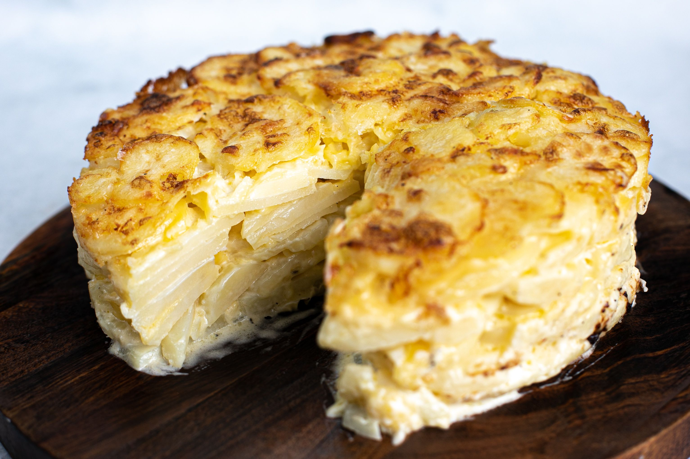

Potato Cake

Description
This golden potato cake is an impressive-looking alternative to your average potato bake. Cook it in a cake tin
then slice into wedges to serve.
Ingredients
- 2kg potatoes, peeled
- 600ml cream
- 1 clove garlic, crushed
- 1 cup grated tasty cheese
Steps
- Preheat oven to 180C. Line the based of a 20cm spring form tin with baking paper.
- Slice potatoes thinly and place in a large saucepan with cream and garlic. Season well with salt and pepper.
Bring to the boil, reduce heat, place a lid on the saucepan and simmer for 3 minutes until potatoes are just
tender. Use a slotted spoon to remove potatoes from cream mixture, and place in a bowl to cool enough so you
can handle them. Reserve the cream mixture.
- Place a layer of potatoes in the base of the prepared tin. Sprinkle over a little cheese. Add another layer
of potatoes, then another sprinkling of cheese. Continue layering until you have used up all the
ingredients, finishing with a layer of potatoes. Pour over cream mixture.
- Bake for 45-50 minutes until golden on top. Remove from oven and allow to cool slightly, then run a knife
around the inside of the tin and carefully release the spring and remove the tin round. Carefully slide the
potato cake onto a serving dish. Slice and serve.